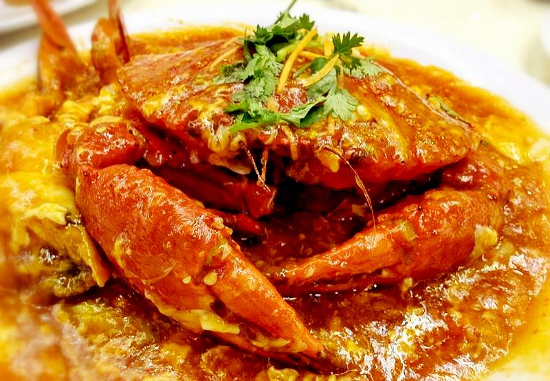
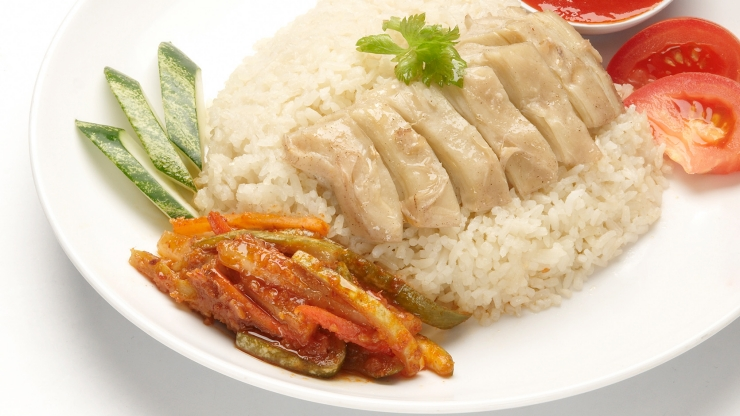
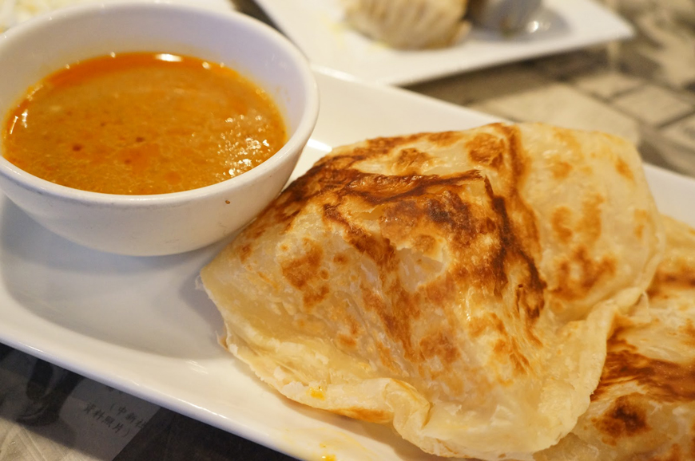
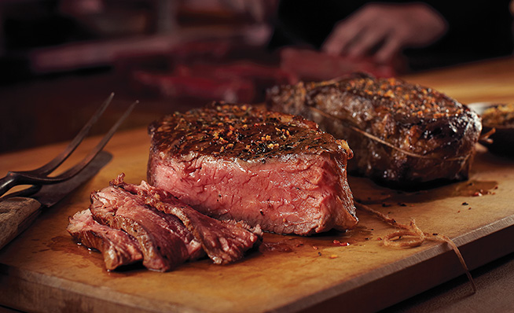
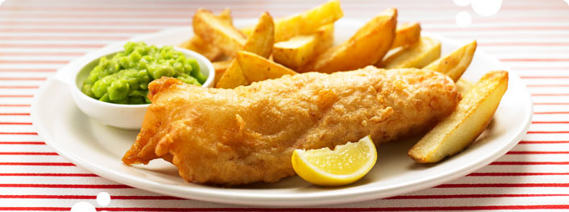

-
Chilli CrabLocal DelightsA Singaporean seafood dish popular in Singapore and Malaysia. Mud crabs are commonly used and are stir-fried in a semi-thick, sweet and savoury tomato and chilli based sauce.
-
Chicken RiceLocalIt may have originated from Hainan in China, but chicken rice is quintessentially Singaporean, and arguably the island's most popular street hawker dish.
-
Roti PrataLocalRoti prata is a fried flour-based pancake that is cooked over a flat grill. It is usually served with a vegetable- or meat-based curry and is from Malaysia and Singapore.
-
Ice CreamDessertsA frozen food, typically eaten as a snack or dessert, usually made from dairy products, such as milk and cream, and often combined with fruits or other ingredients and flavours.
-
Angus BeefWesternBoneless rib-eye steaks are always tender, juicy, and delicious.
-
Fish N ChipsWesternFish and chips is a hot dish of English origin, consisting of battered fish, commonly Atlantic cod or haddock, and chips.